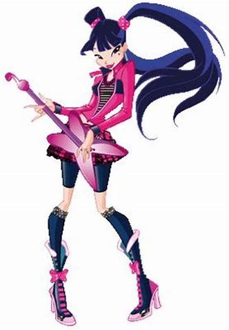
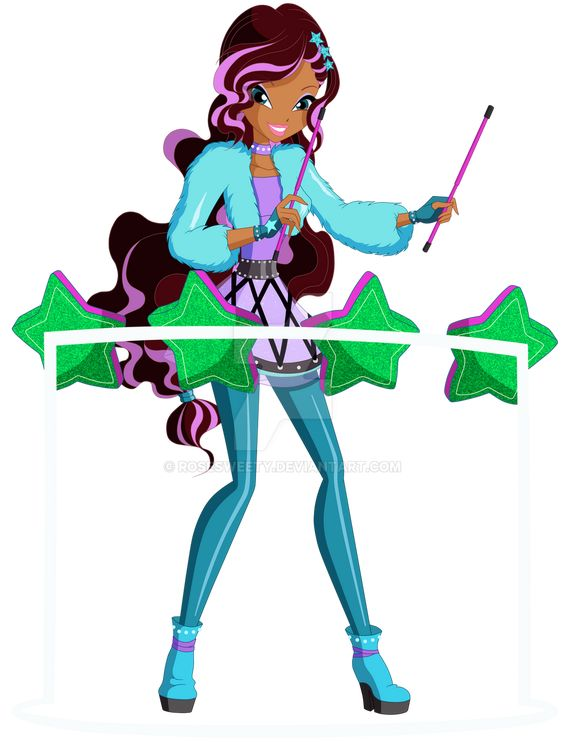
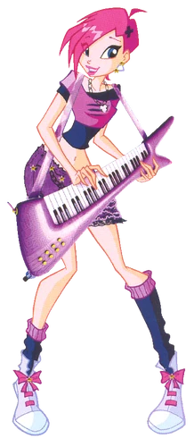
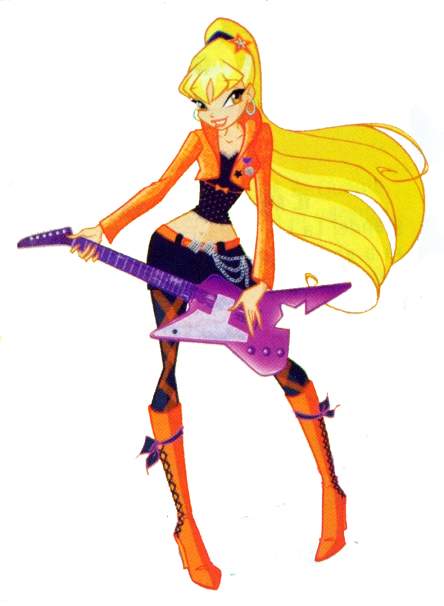
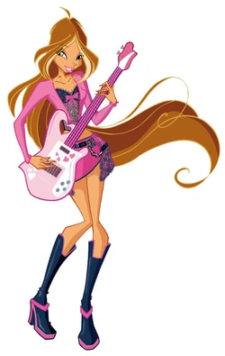
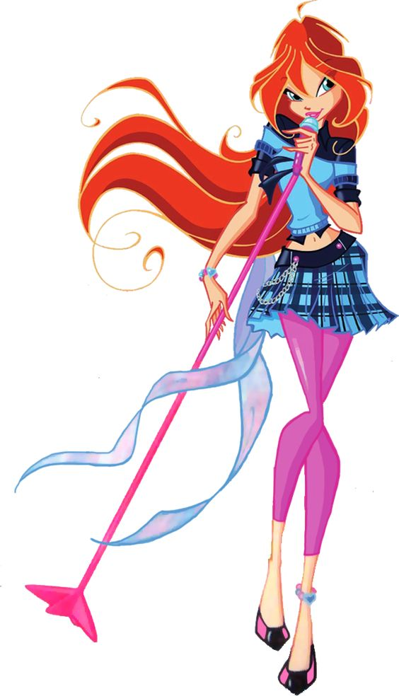

WINX CLUB

Musa
Musa is the Fairy of Music. She hails from Melody and currently acts as its Guardian Fairy. Musa is the daughter of Matlin and Ho-Boe, and is the girlfriend of Riven. Musa is a skilled singer and musician. She is the fifth Winx girl introduced after Bloom, Stella, Flora and Tecna, and is a student of the Alfea College
for Fairies.

Aisha
Crown Princess Aisha is the Fairy of Waves. She is the Crown Princess of Andros, as well as its Guardian Fairy. Aisha joins the Winx Club as its sixth member in the second season, and she is a student of the Alfea College for Fairies. Aisha is a self-confident and talented athlete who excels at dancing and swimming.

Tecna
Tecna is the Fairy of Technology. She hails from Zenith and currently acts as its Guardian Fairy. Tecna is Timmy's girlfriend. She is the fourth Winx girl introduced after Bloom, Stella and Flora, and is astudent of the Alfea College for Fairies as of The Secret of the Lost Kingdom. Tecna is often relied on as the group's tactician and strategist.

Stella
Crown Princess Stella is the Fairy of the Sun and Moon, or the Fairy of the Shining Sun. She is a creative, skilled artist who is Brandon's fiancée. She is one of the founding members of the Winx Club and is a student of the Alfea College for Fairies. Though immature and even selfish and bossy at times, Stella cares for her fellow Winx and sees herself responsible for them.

Flora
Flora is the Fairy of Nature. She hails from Linphea, where she currently acts as its Guardian Fairy. She is Helia's girlfriend. Flora is the third Winx girl introduced after Bloom and Stella, and is a student of the Alfea Collegefor Fairies as of The Secret of the Lost Kingdom.

Bloom
Princess Bloom is the Fairy of the Dragon Flame. She is Prince Sky's fiancée, the second princess of Domino and its Guardian Fairy. She is one of the founding members of the Winx Club, where she is recognized as the leader of their group he is also a student of the Alfea College for Fairies as of The Secret of the Lost Kingdom.